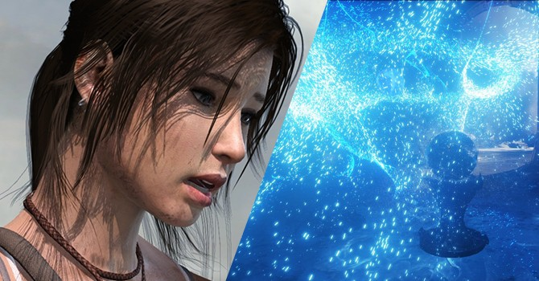
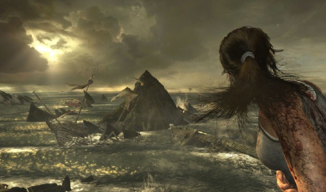
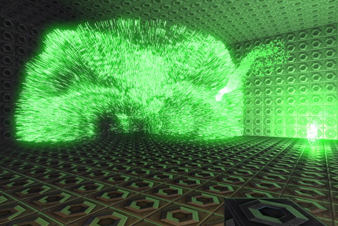
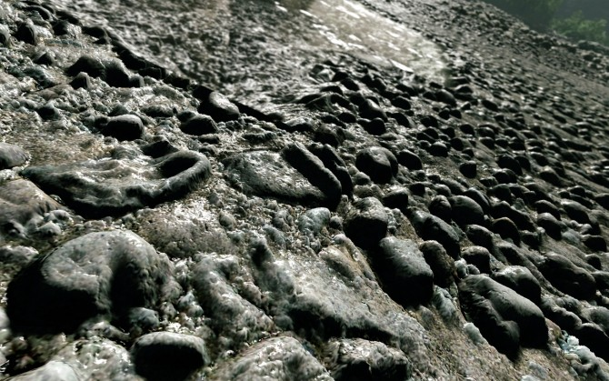

Часть 3:
новейшие технологии
Введение
{kind=link}
Эта часть посвящена самым современным технологиям в компьютерной графике, появившихся с приходом Next-Gen'a.
AMD TressFX
Эта технология — просто идеальный пример того, что игровая индустрия сама по себе не придумывает практически никаких технологий. Просто время идёт, мощности железа растут и со временем, пускай и с какими-то упрощениями, становится возможным делать в реалтайме то, что раньше было доступно только в «тяжёлом» рендере, то есть, в том, что геймеры именуют CGI-роликами. Иными словами, практически все технологии, появившиеся в играх — всего лишь упрощённое заимствование того, что уже давным-давно широко используется в кино и изучено вдоль и поперёк.
{kind=link}
Собственно, что такое TressFX? А очень просто: это всего лишь готовый кусок программного кода от AMD, с помощью которого можно считать волосы персонажа на видеокарте. Раньше это делалось на процессоре и требовало непомерное количество ресурсов. Естественно, ни о каком реалтайме и речи быть не могло. Поэтому в играх причёски в любом случае делались такими полигональными «лоскутками», на которых волосы были просто текстурой. А теперь видеокарты улучшились и игровые программисты могут просто взять этот готовый TressFX и воткнуть его в игру: волосы будут считаться в реалтайме на GPU. Считай, ничего делать не надо: покрутил пару параметров, настроил длину — и очередная пара косичек готова.
Причём, на видеокарте считается не только то, как эти волосы выглядят, но и их физика. То есть, как движется каждый волосок. В будущем это даст гораздо большую реалистичность стрижек у персонажей: они будут выглядеть, прямо как настоящие. Но пока что видеокарты попросту не настолько сильные, чтоб держать в кадре множество персонажей с такими причёсками.
GPU Particles -
частицы на видеокарте

{kind=link}
Всё очень просто: видеокарта лучше справляется с задачами, которые легко распараллелить. Это означает, что видеокарта считает много всего однотипного, а процессор считает что-то одно сложное. В DirectX 11 появилась технология DirectCompute, которая позволяет разработчикам игр самостоятельно считать на GPU практически что угодно. Естественно, благодаря этому те вещи, которые сами по себе хорошо параллелятся первым же делом были перенесены с процессора на видеокарту, что позволило увеличить детализацию этих «вещей» в несколько раз.
Ярчайший пример — системы частиц. В кадре есть множество маленьких-маленьких объектов вроде песчинок, снежинок, капель воды. Раньше их считали на процессоре, поэтому приходилось исхитряться. Например, рисуя вместо одной частицы текстуру, где их 100. А теперь — их считают на видеокарте, так что можно делать это по-честному вместе со всей физикой. Это позволяет ворочать в кадре буквально миллионами частиц, создавая просто ошеломительные эффекты.
Voxel Cone Tracing -
воксельная коническая трассировка.
За этим страшным названием скрывается технология для расчёта рассеянного освещения (indirect illumination). Что такое «рассеянное освещение»? Проще будет показать:
{kind=link}
{kind=link}
На скриншотах свет попадает только на одну стенку и шторы. Но, отразившись от них (рассеявшись), он освещает всю остальную сцену. При чём, свет от зелёной шторы окрашивает всё в зелёный цвет, а от красной — в красный. В реальной природе свет распространяется так же. Но в играх до последнего времени это было невозможно.
К сожалению, я пока что не встречал ни одного упоминания о том, чтобы какая-то игра использовала эту технологию. Даже в Battlefield, насколько мне известно, её не стали использовать, хотя поначалу хотели. Но с приходом консолей нового поколения, я очень надеюсь, что скоро она окажется в мейнстриме.
Tesselation
Многие игроки не до конца понимают смысл этой технологии. Большинство считает, что это «такая штука», которая позволяет вместо плоского пола усыпать его камнями. И всё. Вообще, да. Но она может не только это. Сама по себе тесселяция пришла в DX11 из того же самого «тяжёлого рендера», из которого пришли и волосы, вместе с рассеянным светом. К счастью, в отличие от TressFX эта технология гораздо лучше применима.
Что она делает? А очень просто: интерактивно, прямо во время игры разбивает один большой полигон на кучу маленьких. По сути, благодаря ей можно сделать так, чтоб количество полигонов в кадре всегда было примерно одинаковым. Независимо от того, насколько сильно мы приблизились к поверхности.
Что это нам даёт? Ну, вообще-то, сама по себе тесселяция ничего не даёт. Но зато, если её комбинировать с другими технологиями можно получить очень красивую картинку. В самом простом случае — да, можно добавить к тесселяции другую технологию (vector displacement), которая по специальной текстуре рельефа «выдавит» точки на тесселированом объекте. Это позволит добавить, собственно, рельеф, сделав прям-таки фотореалистично детализированный уровень.
{kind=link}
Но ведь двигать точки на поверхности можно не только по заранее сделанной фиксированной текстуре. Вместо текстуры величину смещения можно получать по какому-нибудь хитрому алгоритму. То есть прямо во время игры, при отрисовке каждого кадра для каждой точки вычисляется, куда её сместить. У текстуры есть разрешение. Рано или поздно, когда ты приблизишься — увидишь пиксели. А у алгоритма разрешения нет. То есть, приближать/отдалять можно сколько угодно, не теряя при этом ни детализации, ни производительности. Таким способом (он называется procedural displacement) можно из одной плоскости выдавливать целые ландшафты. И сколь близко бы ты на него ни смотрел — он всегда будет очень детализированным.
Или такой пример: представьте, что при замерзании персонажа на нём прямо по форме тела вырастают сосульки. Не внезапно появляются из ниоткуда, а именно вырастают. Причём разработчикам для этого достаточно всего лишь 1 раз сделать материал с этим алгоритмом, и потом можно его применять вообще на любой объект. На любой: даже целые уровни можно замораживать, просто накинув на все объекты этот материал.
В общем, тесселяция напару с процедурным дисплейсментом открывает для разработчиков безграничный арсенал выразительных средств. Кроме того, использование тесселяции позволяет вообще отказаться от технологии LOD (Level of Detail). Это означает, что разработчики за те же деньги смогут сделать больше объектов на уровне и не только сами объекты при близком разглядывании будут более детализированными, но и уровни в целом будут более разнообразными. Но это только если делать игру исключительно с расчётом на DX11 и соответствующее железо.
Realtime Ambient Occlusion
Эта технология имитирует мягкие тени во «впадинках». Как она работает — объяснить будет очень сложно, да и не нужно. Главное, что для тех точек экрана, которые на уровне находятся в углах или очень близко с которыми находится поверхность другого объекта рисуется затенение. Технология также пришла из «старшей» графики, где она называется просто Ambient Occlusion (АО). В играх она бывает нескольких видов:
SSAO. Расшифровывается как Screen-Space Ambient Occlusion — AO в пространстве экрана. «В пространстве экрана» — это лишь означает способ, которым оно вычисляется. Он сложный и запутанный, так что тут его не объяснишь. Просто именно он позволил считать АО в реалтайме, поэтому попал в название. В наши дни практически любая игра поддерживает SSAO. И если железо позволяет — его лучше включить, потому что этот эффект почти не отжирает ресурсов, но при этом существенно повышает реализм.
HBAO. Horizon Based Ambient Occlusion — AO на основе горизонта. Реализация SSAO от NVIDIA. Если сравнивать с простым SSAO — что-то улучшили, что-то ухудшили. Чтоб корректно сравить разные виды SSAO в статье — надо смотреть «чистый» AO (на белых объектах) и с совершенно одинаковых ракурсов. Но я, к сожалению, таких сравнений не нашёл. Придётся на словах. Избавились от одних артефактов и тем самым сделали алгоритм более физически корректным. Но появились другие артефакты. Ни те, ни другие не описать словами. Но вот в отличие от SSAO, HBAO «дёргается» при движении камеры, что совсем не хорошо.
Если выбирать между SSAO и HBAO — первое лучше. Но в скором времени Nvidia разработала слегка усовершенствованную версию — HBAO+. Она избавилась от артефактов «простой» HBAO и практически лишилась «шума». Правда, требует более свежую видеокарту, зато работает немного быстрее. Обычно HBAO медленнее, чем SSAO. Но в некоторых играх с некоторыми видеокартами от NVIDIA — работает быстрее. На видеокартах от AMD — точно медленнее.
HDAO. High Definition Ambient Occlusion — AO высокого разрешения. Реализация от AMD. Картинка натуральнее, чем с HBAO. Но вот со скоростью — те же непонятки. На видеокартах от AMD — быстрее, чем HBAO, но медленне, чем SSAO. На видюхах от NVIDIA — бывает по-разному. В том числе бывает, что HDAO быстрее, чем «родной» HBAO.
В общем, обычно HDAO/HBAO — медленнее и качественнее, чем SSAO. Качество картинки в любом случае улучшается так: SSAO — HBAO — HBAO+ — HDAO (хотя лично я считаю, что первые два надо поменять местами). Но вот какой вариант быстрее — проще самому попробовать в игре.